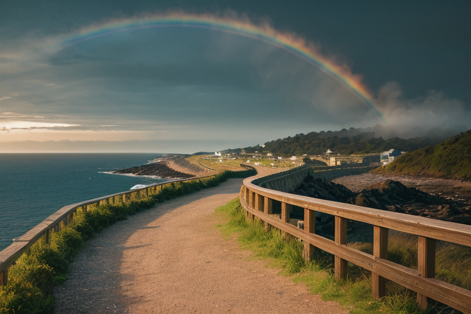
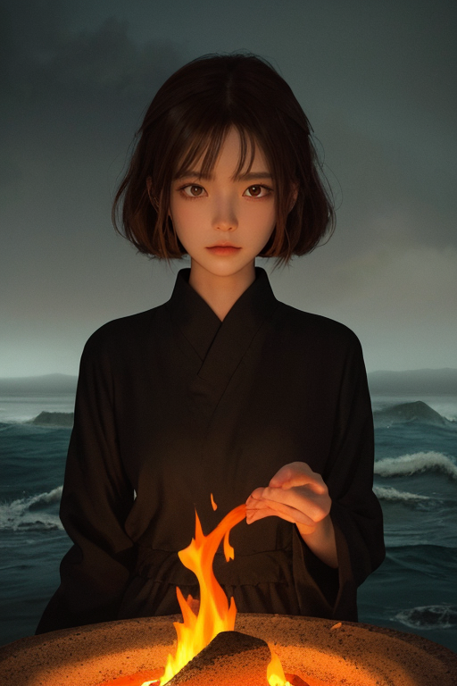
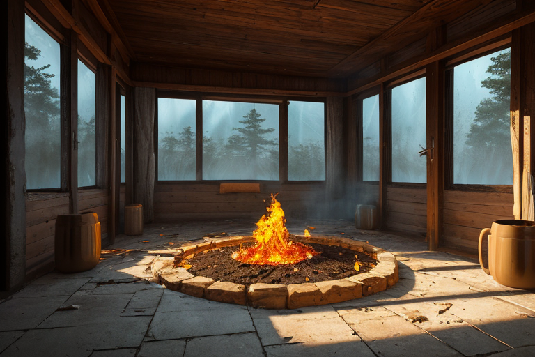
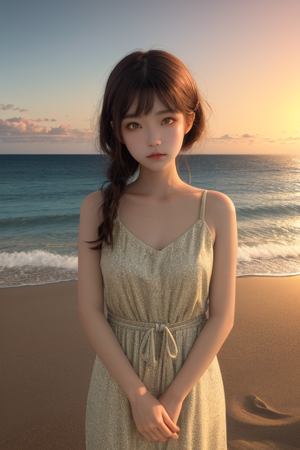
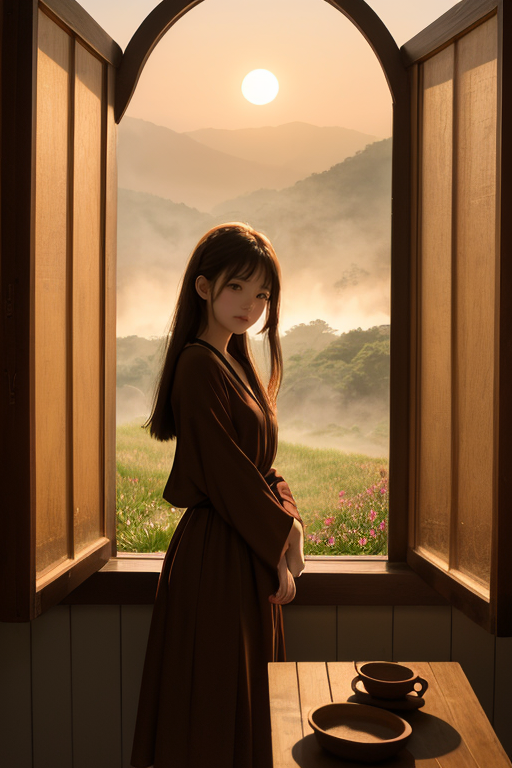

第一章 現実の佐賀
あなたはまだ気づいていない。この土地にも、王がいることを。
虹の松原の松林は、玄界灘の風に常に削られている。一本一本が、海と陸の境界で身を屈め、風圧を分散させる生きた防波堤だ。その奥、唐津城の石垣は海を見据え、かつての国境の緊張を静かに記憶している。有田の谷あいでは、窯から立ち上る煙が山肌に溶け、四百年という時間が陶土に沈殿している。
ここは、常に何かと何かの狭間だ。海と山。大陸と列島。過去と現在。そのすべての境界線上に、人々は暮らし、有田焼を焼き、佐賀牛を育て、バルーンフェスタで空を見上げる。
王は、その境界に立っていた。琥珀色の瞳は、松原を穿つ風の圧力、地中を蠢く陶土の層、海底のプレートの軋みを同時に計測している。彼の名はサガリア・アンバー。感情を持たないはずの調整者だ。しかし、この土地の、窯の中で静かに燻り続ける火のような持続の感情が、彼の内側に何かを灯し始めていた。

第二章 歪みの兆候
虹の松原に、異質な風が吹いた。通常の季節風とは違う、遠く南の海で生まれた湿り気を含んだ、重い空気の塊だ。それは松の梢を揺らし、玄界灘の波にうねりを加え、地中深くの陶土の層に、かすかな振動を伝える。
サガリア・アンバーは、唐津城の石垣の上に立っていた。彼の視界には、目に見えない「圧力」の等高線が浮かび上がる。海溝から伝わる歪みの波。それに、この異質な風がもたらす気圧の変動。二つの力が、この「境界」の土地の上で、偶然のように重なり合おうとしていた。微調整の範囲を超える、大きな歪みの予兆。
彼は無言で手を挙げた。傍らに立つ主席妖精アンベラが、陶土でできた小さな器を取り出し、そっと地面に置く。器の中には、琥珀色の静かな火が灯っている。風が強まる。火は激しく揺らぎ、今にも消えそうになる。王の意志が、器の周りの空気をわずかに濃くする。揺らぎは収まらないが、消えることはない。ただ、持ちこたえる。
彼の内側で、ある感情が持続していた。この火を、この土地を守りたい、という静かな焦燥。それは、命令ではない。歪みの兆候は、まだ誰にも知られず、海の向こうから、ゆっくりと近づいていた。

第三章 王の葛藤
有田陶磁の里の窯元で、小さな亀裂が入った器が、窯出しの列から外された。焼き損じだ。王はその器の傍らに立ち、指先で微かに触れる。内側から、陶土の妖精アンベラの沈黙が伝わってくる。それは諦めではなく、ただ、受け入れる静けさだった。
海溝の歪みは、確実に蓄積していた。筑後川の流れは、昨日より僅かに淀み、虹の松原の松の根元には、見えない圧力がかかっている。王の役割は、この歪みを「調整」することだ。完全には消せない。せいぜい、地盤の緩衝を一層厚くし、家屋の倒壊を数軒減らす程度のことにすぎない。
「受け入れるか」。アンベラの無言の問いが、彼の内側に響く。この土地の全て――焼き物の歴史、温泉のぬくもり、人々の営み――を、歪みという必然の一部として受け入れるか。それとも、感情という名の「火」に任せて、無理な調整を試み、自らを消耗させるか。
彼は目を閉じた。掌に、琥珀色の微かな温もりが灯る。それは、消そうとしても消えない、持続する熱だった。選択は、もうなされていた。

第四章 妖精との対話
虹の松原の砂浜に、二人の妖精が立っていた。波の音だけが、長い沈黙を埋める。
「王は、変わった」先に口を開いたのは、アリタナだった。彼女は掌で砂をすくい、そっと握りしめる。「焼成の時、窯の中は絶対の静寂だ。だが、その静寂の底には、物を変えるほどの熱がある。今の王は、あの窯の中のようだ」
アンベラは、沖合いに浮かぶ玄界灘の水平線を見つめたまま、うなずいた。「彼は、この土地の『持続』そのものを学んだ。吉野ヶ里の遺構が、幾世代にもわたる営みの層を重ねたように。有田の窯が、四百年の炎を絶やさなかったように」
「でも」アリタナの声に、ほのかな哀愁が滲んだ。「私たち妖精は、王が去れば、また土に還る。この形での出会いは、一度きりだ」
「そうだ」アンベラは、ようやく相棒を見た。彼女の陶土の瞳は、夕日に琥珀色に染まっていた。「だが、焼き物が壊れても、その破片は土に混ざり、次の器の一部となる。別れは、ただの形の変化に過ぎない。本質は、続く」
波が、また砂を洗う。彼らが守るべきものは、形あるものではなく、その底を流れる持続する情熱そのものだと、静かな対話は語っていた。

第五章「微調整と余韻」
虹の松原を吹き抜ける風は、松葉のささやきを運び、海の塩気を運ぶ。サガリア・アンバーは、その風の通り道に立っていた。彼の役目は、この土地に吹きつける「風」そのものの微調整にある。観光客の流れ、陶芸家のインスピレーション、茶畑を潤す霧。それら全ては、目に見えない境界線を往来する文化と人の風だ。彼はその風圧をほんの少し調整し、衝突を和らげ、出会いをほんのわずかだけ確かなものにする。
有田の窯元で、老陶工が新しい釉薬の配合に悩んでいた。ふと窓から差し込む夕日の角度が、ほんの少し変わった。琥珀色の光が、試作品の碗を照らす。そのほんのりとした輝きに、老陶工はひらめきを得る。それは偶然ではない。静火王が、窓辺の空気の密度を微かに変え、光の経路を一秒だけ調整した結果だ。彼は何も創らない。ただ、既にあるものの「出会い」を、ほんの少し確かなものにする。
夜の吉野ヶ里遺跡。弥生の火と、現代の街明かりが、遠くで静かに呼応する。サガリアは遺構の傍らに佇み、内に宿る火を感じていた。四百年、二千年。形は変わり、人は入れ替わる。だが、この地に脈打つ「作り続け、生き続けようとする情熱」は、消えることなく、形を変えて受け継がれている。彼自身も、その持続の一部となった。感情を持たぬはずの王が、この地の持続する熱に、自らの在り方を重ねていた。
彼は去らない。ただ、境界の風となり、光の経路となり、土に還る破片となる。静かな情熱は、形を変え、ただ続いていく。
あなたの町にも、王がいる。